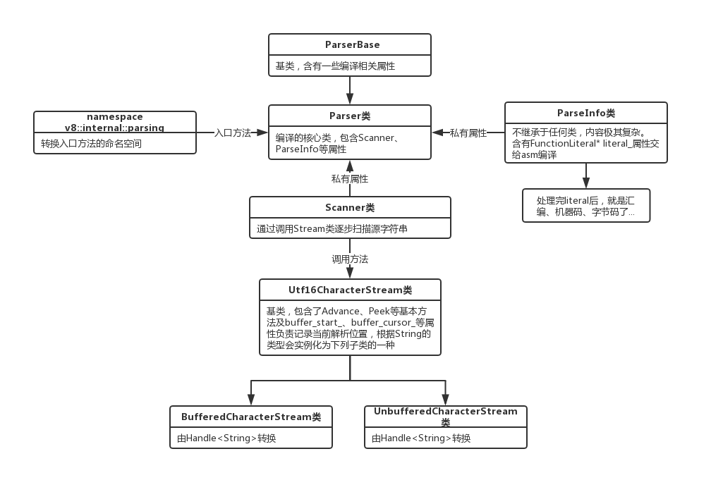
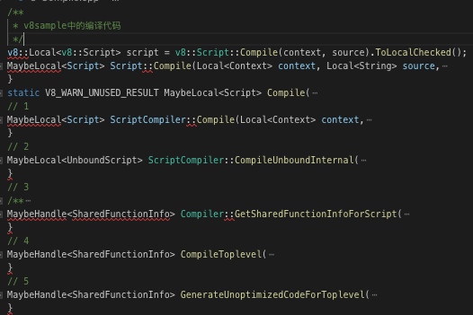

没办法了，开坑吧，接下来的几篇会讲述JavaScript字符串源码在v8中转换成AST(抽象语法树)的过程。
JS代码在V8的解析只有简单的几步，其中第一步就是将源字符串转换为抽象语法树，非常类似于vue中将html转换为VNODE的过程。该过程涉及的类并不多，均位于/src/parsing文件夹中，包括parsing、parser、scanner、token等等，先简单介绍一下各类的作用。
这些所有的类通过互相合作，最后产出一个类型为FunctionLiteral的结果，将其传入asm模块，生成底层代码。
类型的继承关系树如下。

其实发现这个过程还是挺痛苦的，因为从Compile一路看下来，发现直接就进了asm变成了汇编语言，可以说一切来的那么突然，我根本找不到突破点。当然，如果去掉一些无关的配置和CHECK，可以找到编译核心属性，比如说最后的AsmJs部分是这样调用的。
MaybeHandle<SharedFunctionInfo> GenerateUnoptimizedCodeForToplevel(
Isolate* isolate, ParseInfo* parse_info, AccountingAllocator* allocator,
IsCompiledScope* is_compiled_scope) {
// ...
std::vector<FunctionLiteral*> functions_to_compile;
functions_to_compile.push_back(parse_info->literal());
while (!functions_to_compile.empty()) {
FunctionLiteral* literal = functions_to_compile.back();
functions_to_compile.pop_back();
Handle<SharedFunctionInfo> shared_info =
Compiler::GetSharedFunctionInfo(literal, script, isolate);
if (shared_info->is_compiled()) continue;
if (UseAsmWasm(literal, parse_info->is_asm_wasm_broken())) {
std::unique_ptr<UnoptimizedCompilationJob> asm_job(
AsmJs::NewCompilationJob(parse_info, literal, allocator));
if (asm_job->ExecuteJob() == CompilationJob::SUCCEEDED &&
FinalizeUnoptimizedCompilationJob(asm_job.get(), shared_info, isolate) == CompilationJob::SUCCEEDED) {
continue;
}
}
// ...
}
// ...
return top_level;
}鬼一样的代码，只看最后返回的话，可以看出所有的调用都涉及那个literal。
而这个literal是parse_info的一个属性，初始化时是NULL，在compile的某一步一定进行处理了，于是回头去翻了一遍整个编译过程。

最后终于在CompileTopLevel找到了关键的一行代码。
if (parse_info->literal() == nullptr && !parsing::ParseProgram(parse_info, isolate)) {
return MaybeHandle<SharedFunctionInfo>();
}而这里，就是解析源代码成抽象语法树的地方，后面会从这里入手，边看边写吧。